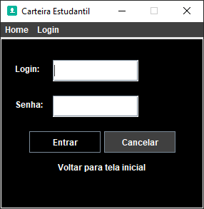

Carteira Estudantil Digital
Documentação de um projeto da faculdade, onde foram utilizados componentes de interface gráfica diretamente com a linguagem Java, assim como, bibliotecas que ajudaram no andamento do projeto: JDBC, Javax.mail.util, etc.
1. Introdução
O presente documento tem, como principal finalidade, apresentar as funcionalidades do software elaborado por Myckael Brenno dos Santos, intitulado Carteira Estudantil Digital, bem como entrar em detalhes a respeito do funcionamento do protótipo funcional do referido programa.
1.1 Contextualização do problema
O presente documento tem, como principal finalidade, apresentar Considerando o cotidiano estudantil atual, torna-se inviável possuir uma carteira estudantil física, devido aos altos custos e à susceptibilidade de perda ou furto. Visando isso, foi desenvolvido o protótipo funcional da Carteira Estudantil Digital, que poderá ser usada no próprio celular do estudante, garantindo a facilidade de acesso.
1.2 Objetivos
O objetivo deste projeto é fornecer uma carteira estudantil digital para estudantes nativos do território nacional.
1.3 Público alvo
O público-alvo deste software é o corpo estudantil de escolas e universidades.
2. Projeto
2.1 Requisitos do sistema
01 – Permitir o cadastro dos usuários: possibilita que o estudante cadastre a si mesmo como um usuário no programa, utilizando e-mail, usuário e senha e, dessa forma, permitindo o login do estudante no sistema. 02 – Geração da carteira estudantil digital: permite que o estudante tenha livre acesso à sua carteira estudantil digital a partir da validação do login no sistema. 03 – Envio da carteira por e-mail: fornece os dados cadastrais da carteira estudantil específica do usuário pelo endereço de e-mail cadastrado na conta do estudante.
3. Telas do sistema
Esta é a tela do cadastro do estudante no sistema. O estudante digita seu e-mail, seu usuário desejado e a senha desejada para validar no sistema. Ao clicar na opção “Já possui um login?”, o usuário será encaminhado para a tela a seguir.
A partir da validação do usuário e da senha na tela de login, o usuário poderá ter acesso ao conteúdo e à visualização da sua carteira de estudante. A próxima tela a ser aberta verifica as informações cadastradas e mostra a opção de mostrar a carteira do usuário. O login cadastrado foi o admin e a senha cadastrada para esse usuário foi senha.

Nesta tela, o usuário poderá confirmar o envio da carteira de estudante digital solicitada para o e-mail cadastrado no sistema e também poderá visualizar a carteira de estudante. Na última opção, o usuário será encaminhado para a tela de visualização da carteira

Aqui, o sistema apresenta a carteira de estudante digital cadastrada específica para o usuário validado, contendo informações como nome do estudante, nome da faculdade, nome do curso, CPF, RG, data de nascimento e a validade.